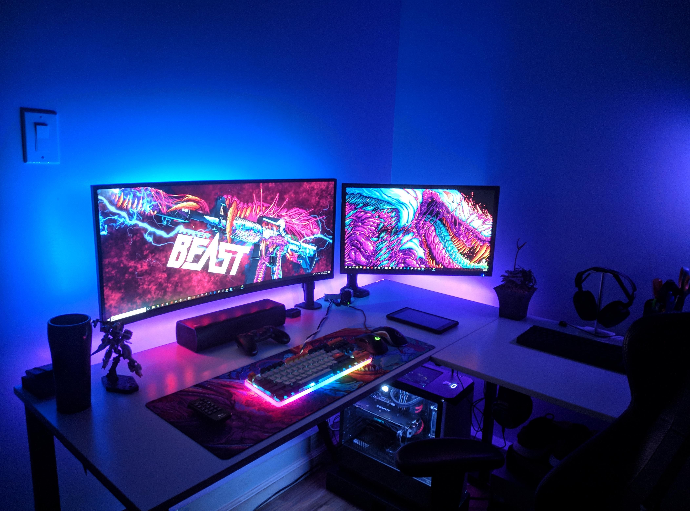
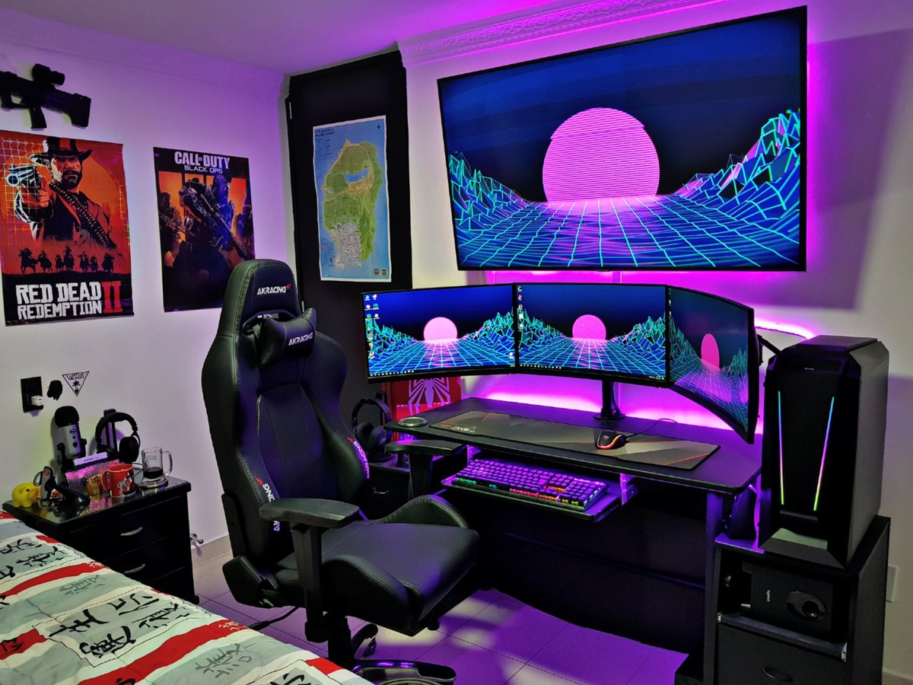
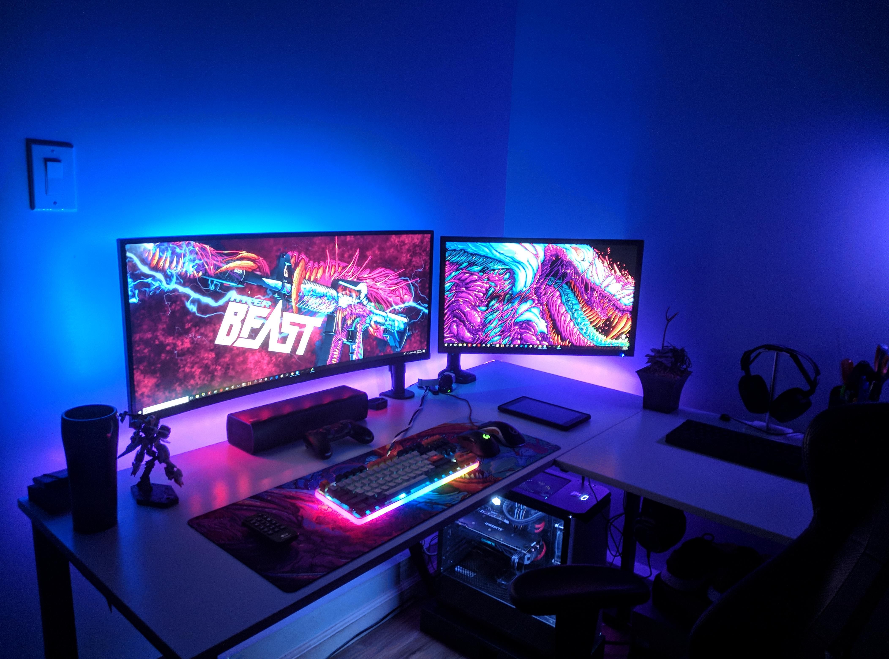
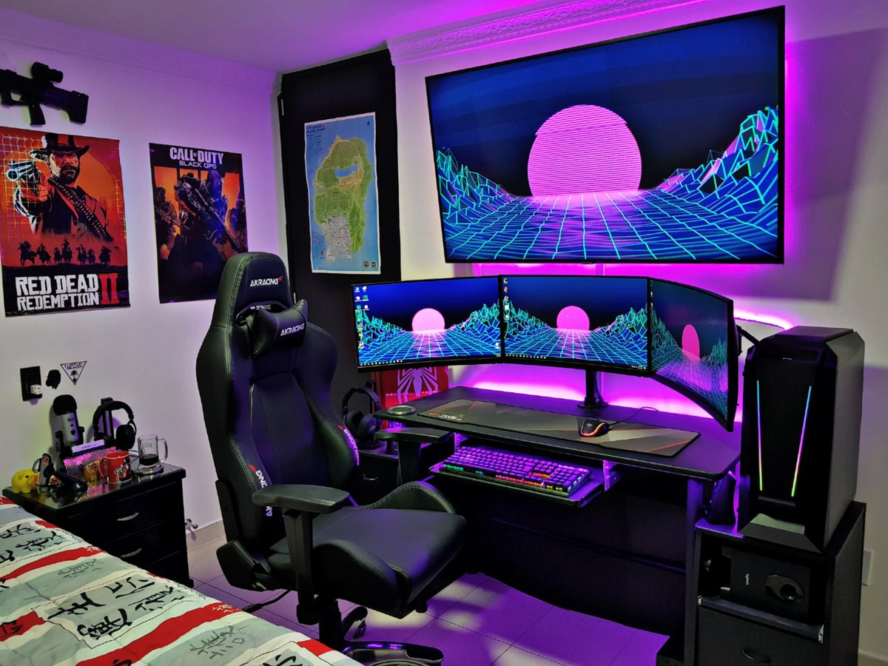

Ensambles
En el mundo del PC Gaming es comun ver que los equipos sean ensamblados por sus propios usuarios, esto es una de las cosas mas caracteristicas dentro de la comunidad de este mundo.
Una de las cosas que mas se toma en cuenta son las especificaciones del hardware, dependiendo del presupuesto del usuario en cuestion se optara por usar componentes de baja, media o alta gama (por ejemplo yo utilizo un Core i5 7400, GTX 1060 3GB y 8GB RAM DDR4). Para los cuales existen diferentes parametros o configuraciones. Es esta misma flexibilidad y personalizacionla que hace brillar el concepto de: armar tu propia PC. Asi como las tipicas luces LED RGB que se utiizan no solo para decorar el ordenador, sino todo el setup en general.
Ejemplos de setups:
 
